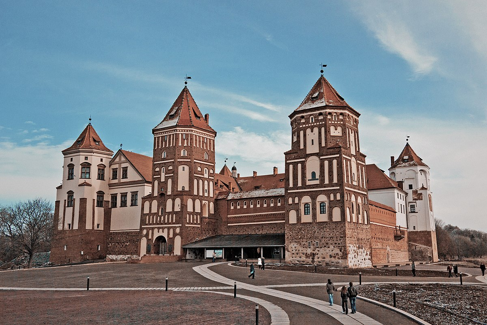
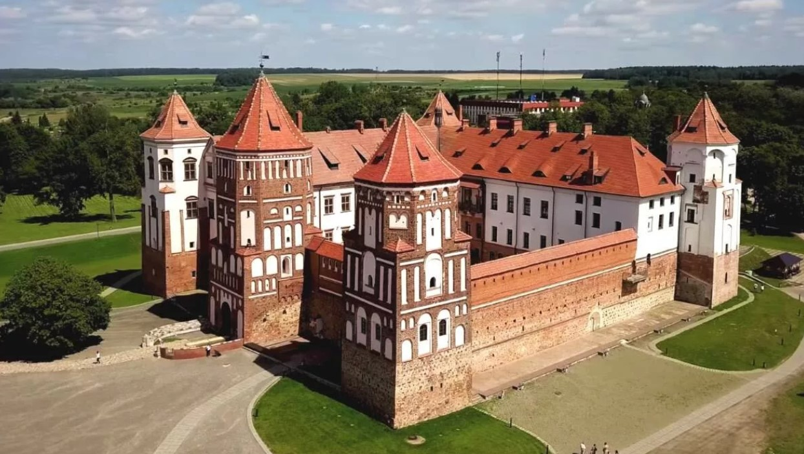

В белорусской историографии было распространено мнение, что впервые Мирский замок упоминается в так называемой «Хронике Линденблатта» в 1395 году в связи c нападением войск Тевтонского ордена, которые, поддерживая Свидригайло в его междоусобице против Витовта, вторглись на Новогрудчину, достигли Мира и уничтожили поселение. Однако в 2014 году белорусским историком Олегом Лицкевичем было обнаружено, что дата упоминания Мира́ в 1395 году является ошибочной, так как в источнике нет упоминания о поселении. Город в источнике, под названием которого историки подразумевали «Мир», является литовским городом Алитусом.
Историкам пришлось устанавливать новую дату первого упоминания Мира́. Этой датой стало 28 мая 1434 года, когда Великий князь литовский Сигизмунд Кейстутович подарил двор Мир и окрестные земли своему соратнику, виленскому каштеляну Сеньке Гедыгольдовичу. И хотя в грамоте упоминается всего одна curia (двор) некоего Демида, археологические материалы начала XV века встречаются не только на территории современного местечка Мир, но и на другом берегу реки Миранки, именно на том месте, где возвышается теперь Мирский замок. Остатки выявленных дозамковых построек свидетельствуют о том, что они были достаточно богатыми для своего времени. Так, в культурном слое замкового двора найдены остатки печи, сложенной из горшковой плитки.

Теперь тяжело определить, какими мотивами руководствовался магнат, принимая решение о создании укреплённой резиденции. Почти все исследователи истории Мирского замка постоянно ставят вопрос, что заставило далеко не самого богатого и не самого влиятельного урядника Великого княжества Литовского взяться за масштабное строительство. Интригует и тот факт, что Ильинич затеял грандиозное строительство на склоне своей жизни. Кроме того, до XVI века в Великом княжестве Литовском совсем не строились частные каменные замки, и даже очень зажиточные паны обычно обходились деревянными укреплёнными дворами.
Теперь тяжело определить, какими мотивами руководствовался магнат, принимая решение о создании укреплённой резиденции. Почти все исследователи истории Мирского замка постоянно ставят вопрос, что заставило далеко не самого богатого и не самого влиятельного урядника Великого княжества Литовского взяться за масштабное строительство. Интригует и тот факт, что Ильинич затеял грандиозное строительство на склоне своей жизни. Кроме того, до XVI века в Великом княжестве Литовском совсем не строились частные каменные замки, и даже очень зажиточные паны обычно обходились деревянными укреплёнными дворами.
Юрий Ильинич умер в 1526 году, передав свои владения четверым сыновьям. Его сын Щасный (Феликс) пережил всех братьев и стал владельцем наследства. Он был женат на Софье Радзивилл, дочке Яна Бородатого, с которой имел сына, также Юрия. Дядя последнего — Николай Радзивилл Чёрный — послал молодого Ильинича ко двору императора Фердинанда I. В результате этой поездки 10 июля 1553 года Юрий как владелец громадного каменного замка, получил графский титул. Так осуществилась мечта Юрия Ильинича-деда, хотя род его и угас. Юрий не был женат, все свои богатства он отписал сыну Николая Радзивилла Чёрного Николаю Христофору Радзивиллу Сиротке. После смерти Николая Чёрного в 1564 году Юрий Ильинич сделался опекуном его детей. Предчувствуя раннюю смерть, он 25 августа 1568 года усыновляет Радзивилла Сиротку, составляет завещание и умирает ровно через год после того, как ему приснился пророческий сон, — в 1569 году. Вскоре после смерти последнего из угасшего рода Ильиничей Николай Радзивилл Сиротка был официально записан владельцем Мира и Белой. Передавал ему эти имения новогрудский возный Григорий Тарасевич, а принимал от имени Николая Сиротки старый радзивилловский слуга Мацей Кавячинский, известный в истории Реформации как меценат Симона Будного. Таким образом, с 1569 года и на протяжении трёх столетий замок принадлежал Радзивиллам.
| Замки | Год основания | Кто построил | |
| Лидский замок | середина XIV века | ||
| Новогрудский замок | середина XIII века | Миндовг | Великий князь Литовский и Гедимин |
| Кревский замок | конец XIII века | Гедимин | |
| Гольшанский замок | начало XVII века | Павел Сапега | |
| Кревский замок | конец XIII века | Гедимин | |